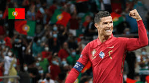
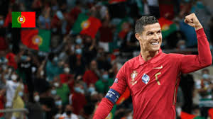

.jpeg)
.jpeg)
.jpeg)
.jpeg)
.jpeg)
.jpeg)
.jpeg)
.jpeg)
.jpeg)
.jpeg) 

Cristiano Ronaldo, often simply known as "CR7," is one of the most celebrated football
players of all time. Born on February 5, 1985, in Funchal, Madeira, Portugal, Ronaldo's journey from a
young talent on a small island
to global superstardom is remarkable. Known for his incredible work ethic, athleticism,
and unmatched dedication to his craft,
he has earned his place among the greatest players in football history.
Ronaldo began his professional career with Sporting CP,
where he caught the eye of Manchester United's legendary manager, Sir Alex Ferguson.
He joined United in 2003, quickly making a name for himself with his electrifying pace,
footwork, and goal-scoring ability. His first stint with United lasted until 2009,
during which he won multiple Premier League titles, a Champions League title,
and his first Ballon d'Or in 2008.Internationally, Ronaldo has been a key figure for Portugal,
helping his national team win the 2016 UEFA European Championship
and the 2019 UEFA Nations League. His relentless pursuit of excellence, physical fitness,
and leadership on the field have cemented his
legacy as one of the sport's true legends.